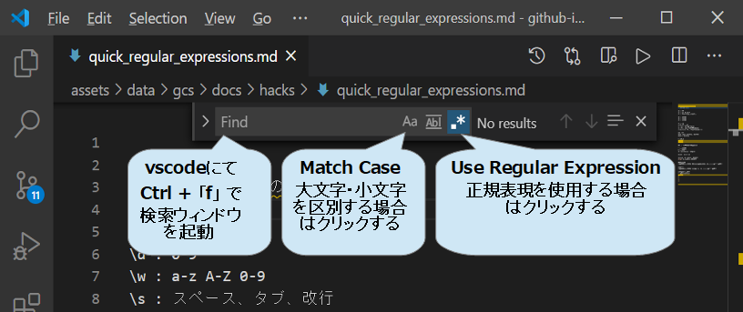

正規表現のとりあえず知っておきたい使い方
vscodeで正規表現を使う
vscodeの検索機能で正規表現を使用でき便利です。
次の手順で、使用できます。
- vscode を起動する
- 「ctrl」+「f」で検索ウインドウを起動する
- 検索ボックス右の「.*」(Use Regular Expressions)をクリックして オンにする
- 検索ボックス右の「Aa」(Match Case)をクリックして オフにする（大文字、小文字を区別しない場合）

| コード | 意味 | 使用例 |
|---|---|---|
| . | 改行を除く任意の1文字 | |
| \ | エスケープ | 「.」を探す: \. |
| \d | 0-9 | |
| \w | a-z A-Z 0-9 | |
| \s | スペース、タブ、改行 | |
| \D | \d以外 | |
| \W | \w以外 | |
| \S | \s以外 | |
| \t | タブ | |
| \r\n | 改行 win | |
| \r | 改行 v9までもmacos | |
| \n | 改行 unix v10以降のmacos | |
| \r\n|\r|\n | 改行 すべてのosに対応 |
| 重量演算子 | 意味 | 使用例 |
|---|---|---|
| {n} | n個 | \d{4}: 1234 |
| {min, max} | min以上, max以下 | \d{1,2}: 1, 23 |
| {min,} | min以上 | \d{2,}: 12, 345 |
| ? | {0,1} | \d? |
| + | {1,} | \d+ |
| * | {0,} | \d* |
量? :一番短い文字列でmatch
| 重量演算子 | 意味 | 使用例 |
|---|---|---|
| ^ | 行の先頭 | |
| $ | 行の末尾 | |
| \b | 単語の境界 | \bkg1\b |
| s1|s2 | s1 or s2 | |
| (s1|s2) | s1 or s2 | |
| (b|c|g) | b,c,gのどれか1文字 | |
| [bcg] | b,c,gのどれか1文字 |
| 単語 | 意味 | 使用例 |
|---|---|---|
| キャプチャ | ()でくくった内容を 置換などで順番に$1, $2,・・・で参照できる | |
| 後方参照 | ()でくくった内容を 後方で \1, \2, ・・・で参照できる |
[]内でのメタ文字
| 単語 | 意味 | 使用例 |
|---|---|---|
| ^ | 否定([の直後) | |
| - | 範囲 | |
| \^, -, ], \ |